Batch 1
3.无重复字符的最长子串
题目

解题
方法：滑动窗口
理解：
所有可能的子串为：从每一个字符开始的 所形成的不包含重复字符的最长字符串。如 对于
s = "abcabcbb"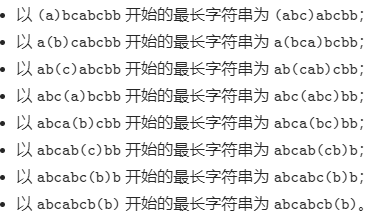
一个重要的规律：依次递增地枚举子串的起始位置，那么子串的结束位置也是递增的。
此题的主要思路就是：要充分利用好已经判断是不重复字串的区间。比如 [a, b] 是不重复字串，[a+x, b]也是不重复字串（x为任意使得a+x<=b的非负整数）。
操作：
- 设置两个指针p1,p2。p1,p2初始都在第一个字符，p2不断向右滑动，每次滑动都判断一下[p1,p2]之间是否包含重复字符。某时刻，p2指向第k个位置，若向p2右滑动指向k+1就会导致[p1,p2]出现了重复字符，则以p1处开始的字符，能形成的最长字符不重复字符串就是[p1, k]了，则将字串[p1,k]添加到结果集合中。
- p2指向k+1后，由于p1,p2之间出现了重复字符，p1就不断向右滑动，直到没有重复字符出现为止。p1停止滑动之后，p2如上一步那样不断向右滑动，当p2滑动到导致 p1,p2出现重复字符时，则将此时产生的最长字串放入结果集合中。
- 不断重复上述步骤，最后遍历结果集合，拿出长度最长的字符串。
ps：动态维护一个集合，来判断[p1,p2] 是否包含重复字符。p2向右移，向集合中添加p2指向的字符；p1向右移，从集合中删除p1指向的字符。
eg:
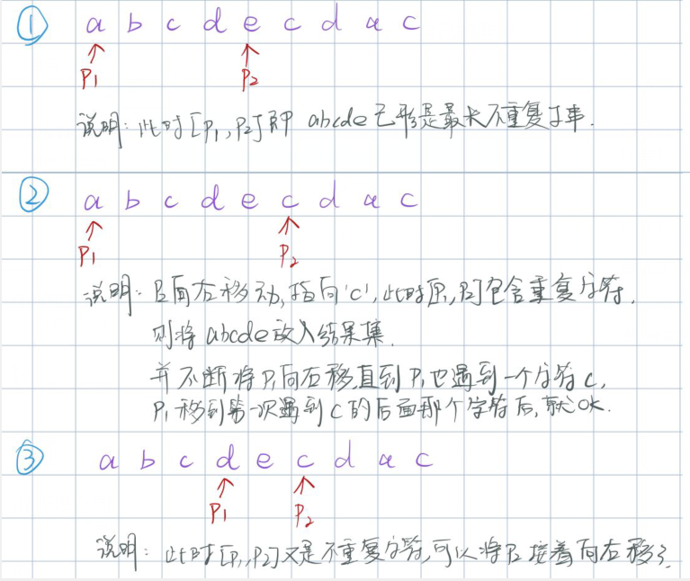
My Code
class Solution { public int lengthOfLongestSubstring(String s) { int maxLength = 0; Set<Character> st = new HashSet<>(); for (int p1=0, p2=0; p2 < s.length(); ++p2) { // 以p2(right)指针为外层循环 if (!st.contains(s.charAt(p2))) { st.add(s.charAt(p2)); maxLength = Math.max(maxLength, st.size()); } else { while (s.charAt(p1) != s.charAt(p2)) { st.remove(s.charAt(p1)); ++p1; } ++p1; // p1 指向st中第一个没被移除的字符，所以在删除重复字符后，p1往后移动且不用再删除 } } maxLength = Math.max(maxLength, st.size()); return maxLength; }}
146. LRU 缓存
记忆：双向链表 + hash表
写代码：
设置首尾哑节点。
删除节点，将节点移动到最前面。是通过链表操作真实的去移动节点，而不是将原节点删除，然后再new一个节点放到最前面。新new节点的话，需要去维护hash表，比较复杂。因此，采用真实的移动node，即修改node中的pre和next指针达到移动的效果。设置四个函数：两个基础函数 + 两个操作函数。
- 基础函数1：将目标节点孤立，即从链表中先断开。
- 基础函数2：添加目标节点到首节点。（因为每次添加节点必定是添加到队首的）
- 操作函数1：移动节点到首节点， 该函数通过调用 基础函数1 和 基础函数2 实现。
- 操作函数2：删除尾节点，该函数通过调用 基础函数1 实现。
写完这四个基础函数，再去写put和get就好写了。
题目
类型：链表操作
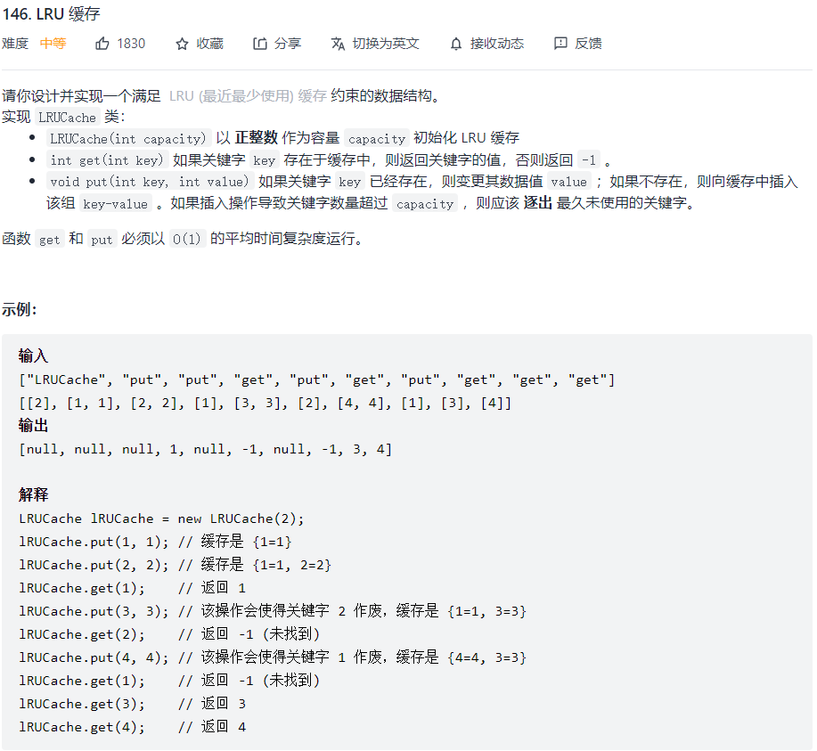
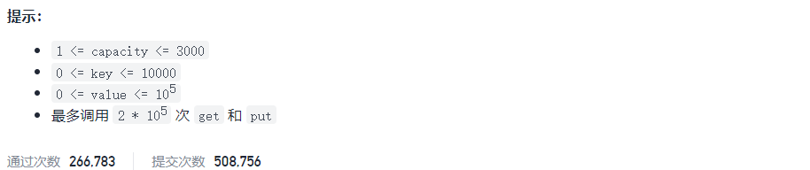
题解
方法：双向链表 + hash表
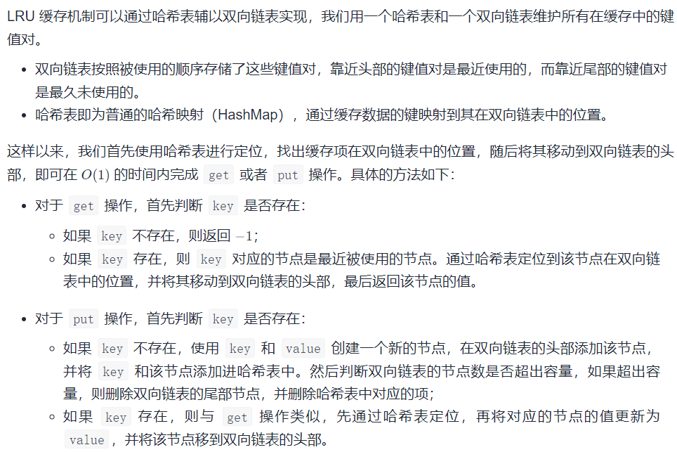
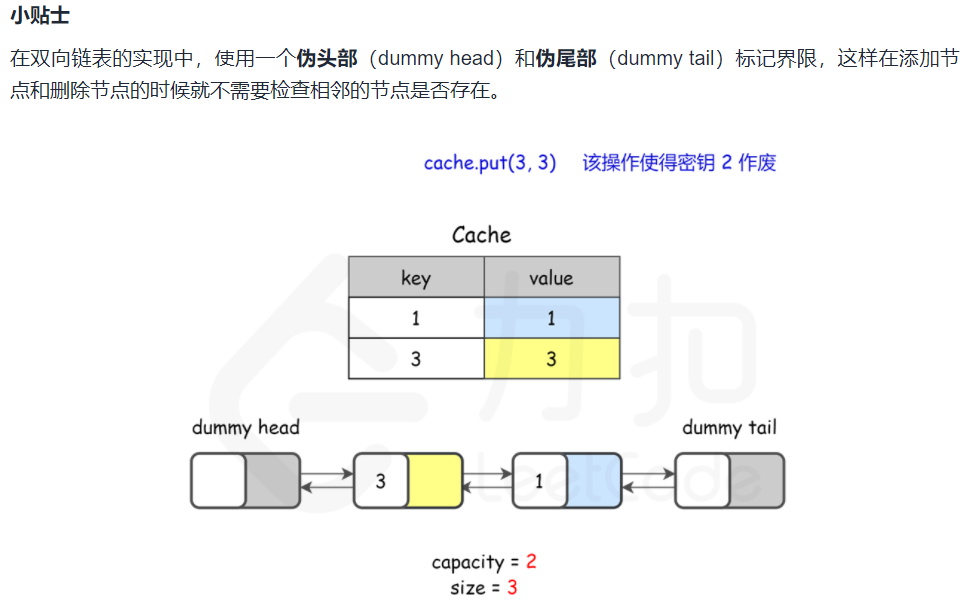
My Code
xclass LRUCache { class Node { int k, v; Node pre, next;
Node(int k, int v) { this.k = k; this.v = v; } Node() {} }
private int capacity, nodeNum; private Map<Integer, Node> mp; Node head, tail; // 双向链表首尾dummy结点
public LRUCache(int capacity) { this.capacity = capacity; this.nodeNum = 0; mp = new HashMap<>();
head = new Node(); tail = new Node(); head.next = tail; tail.pre = head; }
public int get(int key) { if (!mp.containsKey(key)) { return -1; } else { Node node = mp.get(key); moveNodeToHead(node); return node.v; } }
public void put(int key, int value) { if (mp.containsKey(key)) { mp.get(key).v = value; moveNodeToHead(mp.get(key)); } else { Node newNode = new Node(key, value); mp.put(key, newNode); addNodeToFirst(newNode); nodeNum++; if (nodeNum > capacity) { deleteLastNode(); nodeNum--; } } }
private void removeNode(Node node) { node.pre.next = node.next; node.next.pre = node.pre; } private void addNodeToFirst(Node node) { node.pre = head; node.next = head.next; head.next.pre = node; head.next = node; } private void moveNodeToHead(Node node) { removeNode(node); // 这个操作使得edge case "get的node原本就在首位" 能够handle. addNodeToFirst(node); } private void deleteLastNode() { // 一定要先删除mp中的值再removeNode(tail.pre)。颠倒的话，tail.pre已经不是目标要删的Node了 mp.remove(tail.pre.k); removeNode(tail.pre); }}
206.反转链表
题目
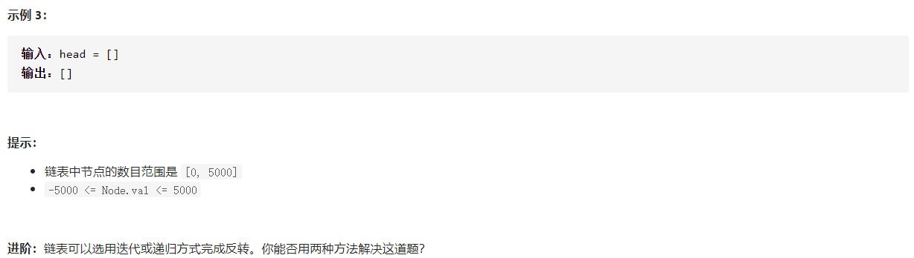

解题
方法一：迭代
遍历链表的每一个节点，对于每个遍历到的cur节点，将cur的next 指针改为指向前一个元素。由于cur没有保存前面节点的信息，因此需要一个pre的指针指向cur前面的节点。当cur的next指针指向前一个节点的时候，cur后面节点就找不到了，因此需要一个nex指针指向下一个节点。综上，整个遍历的过程中需要 三个指针即可完成遍历并且反转每一个节点的指针。
Key Point: 1）无需Dummay节点；2）整个过程只有
cur.next需要修改，而pre和next只是为了防止前后丢失前后节点而设置的，因此pre和next结点的指针无需改。迭代终止：当cur某次向后移动的时候，cur指向空的时候，就该停止了。
MyCode - 迭代法
xxxxxxxxxxpublic ListNode reverseList(ListNode head) {ListNode pre = null;ListNode cur = head;ListNode next;while (cur != null) { // 以cur为锚点, 循环判断curnext = cur.next; // 由于每次 'cur.next=pre' 都会失去next信息, 因此这里先存下next。cur.next = pre;pre = cur;cur = next;}return pre; // 最后cur是最终的null了，需返回pre}
方法二：递归
前面迭代是从前往后遍历链表进行反转，而递归时从后往前进行反转。
递归思路：假设第 k+1到最后一个节点 已经完成反转。那么下一步则将 这个已经反转好的子链表 与第k个节点实现反转。直接看代码就懂了：
MyCode - 递归法
xxxxxxxxxxclass Solution { public ListNode reverseList(ListNode head) { if (head == null || head.next == null) { return head; } ListNode lastNode = reverseList(head.next); head.next.next = head; // 让当前节点的下一个节点 向自己。 head.next = null; // 让当前节点的next不要指向下一个节点了。因为下一个节点的next已经指向当前节点，不设置为null将会出现循环。 return lastNode; }}代码理解：
这个p，一直没操作，只是递归函数中兜了一圈就出去了。注意，只有输入递归函数的节点是最后一个节点的时候，没有p这种兜圈行为，而是返回节点本身。因此，这个p其实就是一直指向尾节点，然后在多层递归中不断传递。等到最顶层递归结束时，就可以直接拿到尾节点地址了，此时尾节点就是新链表的首节点，便可直接返回。
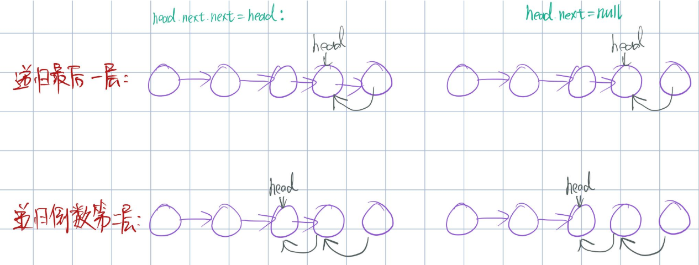
25.K 个一组翻转链表
题目
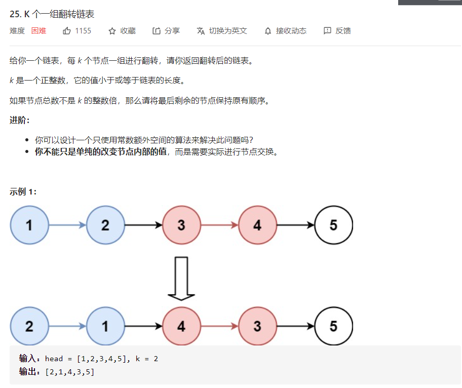
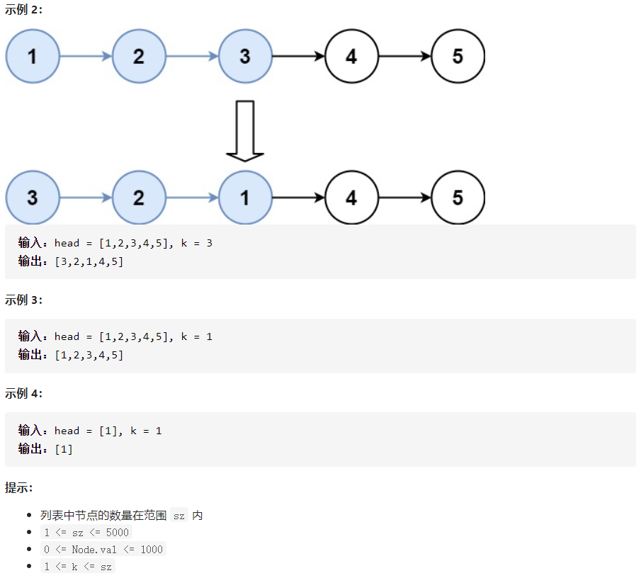
题解
方法：模拟
就是对整个过程进行模拟，没有啥技巧。核心思路是：从头到尾遍历链表，将每k个结点作为一组进行翻转，反转后再将这组连接回原来的链表中。
为了实现k个结点一组的翻转，需要head、tail两个指针分别指向遍历过程中一组k个的第一个结点和最后一个结点。为了实现一组反转完之后，连接回原来的链表，需要两个指针：pre，nex分别指向这组结点 前面和后面的结点。
head、tail指针完成反转示意图：
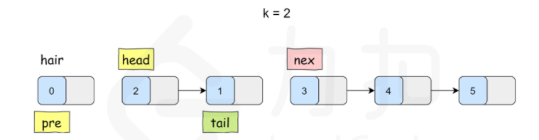
pre、nex指针实现缝合示意图：
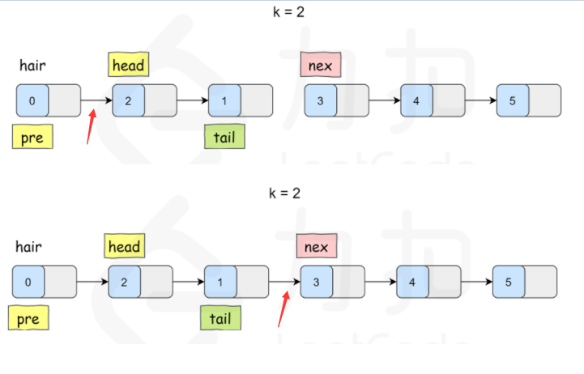
215. 数组中的第K个最大元素
题目
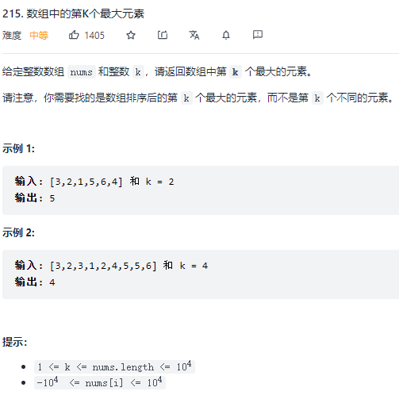
题解
方法一：基于快速排序的选择方法
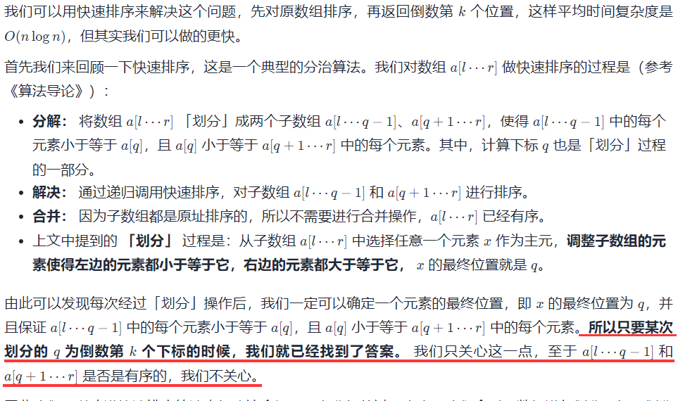
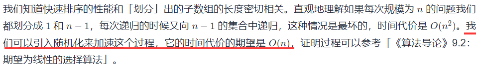
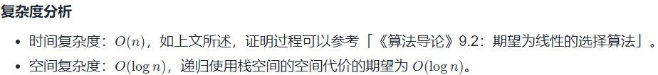
理解O(n2) : 第1层递归需要比较n次；第2层递归只需要关注自己那段的元素，因此只需比较n/2次；越往后，关注的那段的元素数量就越少，每更深一层，关注段元素就除2。 而所有元素都需要排序的快排，每层递归都要关注所有段，所以每层都要比较n次。这个只用关注的那段，因此比较的次数少了很多。
之所以为O(n)，是因为：第一层递归需要比较n次，第二层需要比较n/2次，第三次需要比较n/4，…，最后一层需要比较一次。就是说第二层到最后一层的总比较次数为：n/2 +n/4+n/8，…，1 小于 n次。因此总比较次数少于2n，因此复杂度为O(n)
ps：这个不能用
(首项+末项)x项数/2（即(n+1)xlogn/2->O(nlogn)）来算，因为不是等差数列，这是个等比数列。
方法二：基于堆排序的选择方法
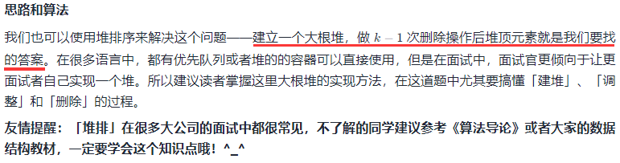
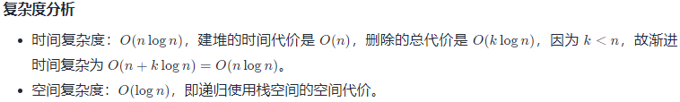
这道题就 堆的那些基本操作，见源码。
15.三数之和
记忆：根据 a+b+c与target的关系，来判断谁移动p2和p3谁移动。相等：p2 p3 都移动；小于，p2向右移动；大于：p3向左移动
题目
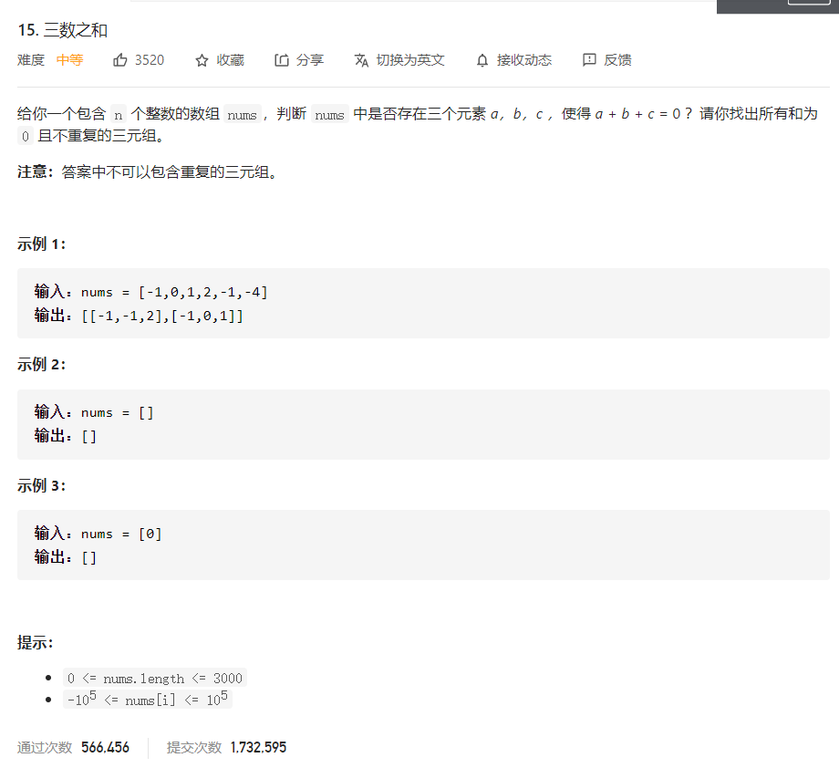
解题
方法：排序 + 双指针
题目中要求不能有重复的三元组，因此枚举三元组的过程中，保证
元素1<元素2<元素3，即可防止枚举到 如(2, 4, 9) 和 (4, 9, 2)这种相同的三元组。先将数组做个排序，使得元素从左到右是依次增大的。
这个题最直接暴力的解法是 三重循环。但是可以利用三元组之间的关系，优化成 两重循环。这个关系便是：当第一个元素不变时，第二个元素在增大的过程中，第三个元素肯定是变小的。设p1,p2,p3分别指向三个数，两重循环为：第一重循环 中p1从左到右移动；第二个循环中，p2从p1 后面那个元素开始 从左到右移动，同时 p3从右到左遍历。
什么时候停止p1遍历?
当p1>0时 ，p2,p3肯定也>0，此时加起来肯定不可能为0，此时停止遍历。
当p1遍历到倒数第二个元素时，后面只剩一个元素了，此时也停止遍历。
什么时候停止p2遍历？
p3元素= - (p1元素+p2元素)，因此当p2元素 > -(p1元素+p2元素)时，停止遍历p2。因为p3元素>=p2元素，后面得到的p1元素+p2元素+p3元素 肯定也 >0。
什么时候终止p3遍历？
设p3元素 = - (p1元素+p2元素) = a。那么第二重循环中p3从右到左移动的时候：
- 当
p3所指元素值 > a时，继续向左遍历移动p3； - 当
p3所指元素值 = a时，说明找到一个三元组，将这个三元组加入结果集，同时p3继续向左移动一个元素（由于在继续找下一个结果的时候，第二个元素增大，所以第三个元素肯定会变小，因此 将p3向左移动一个位置。） p3所指元素值 < a当中便终止p3继续向左，因为 继续往左遍历得到的第三个元素只会越来越小。
- 当
所给的数组序列 可以包含相同的元素，因此遍历p1时，如果p1向右移动一步得到的元素和前一个元素一样，那么这步移动相当于无效，需要继续移动一步，p2,p3也是，移动后判断一下和移动前的数是否一样，一样则再移动一次。
如 排序后为：
-4，-1，-1，0，1，2，当p1指向第一个-1时, 得到一些结果； 下次p1向右移动还是指向-1，这样得到的结果肯定是 p1 指向第一个-1时就得到过的了。
写代码思路：
一个循环中根据情况移动不同指针的写法，就是在一个循环中用if-else 结构来判断是移动哪个。
记忆一下：
写代码内层循环时，用if-else 根据p3的状态，决定移p1还是p2
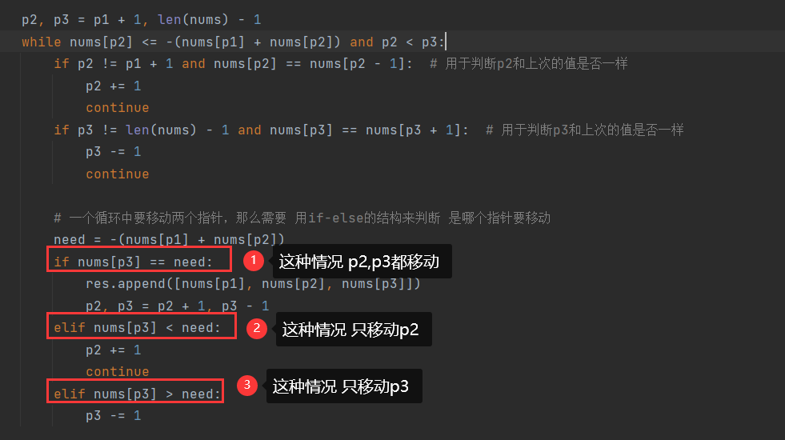
230515my：用nums[p3]和need进行比较，本质上还是 a+b+c 之和与0 比较。
53.最大子数组和
题目
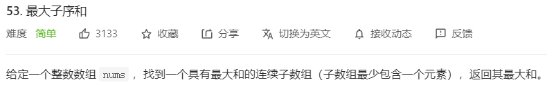

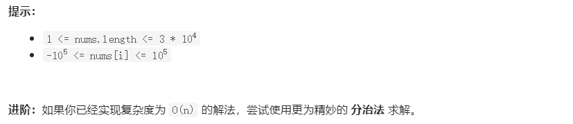
解题
阶段 与 状态：
dp为一维数组，我们用dp[i]代表以第i个数结尾的「连续子数组的最大和」。
状态转移方程：
在计算dp[i]时，如果dp[i-1]>0，那么就就将第i个元素加到dp[i-1]即可。若dp[i-1]<0，则不要扯上前面的数了，第i个数自己构成一个子序列。
初始化与dp填充顺序：
- 填充dp第一个元素，dp[0]=nums[0]；
- 填充dp时，依次dp[0], dp[1], ..., dp[nums]
补充题4. 手撕快速排序
No 912, 排序数组
题目
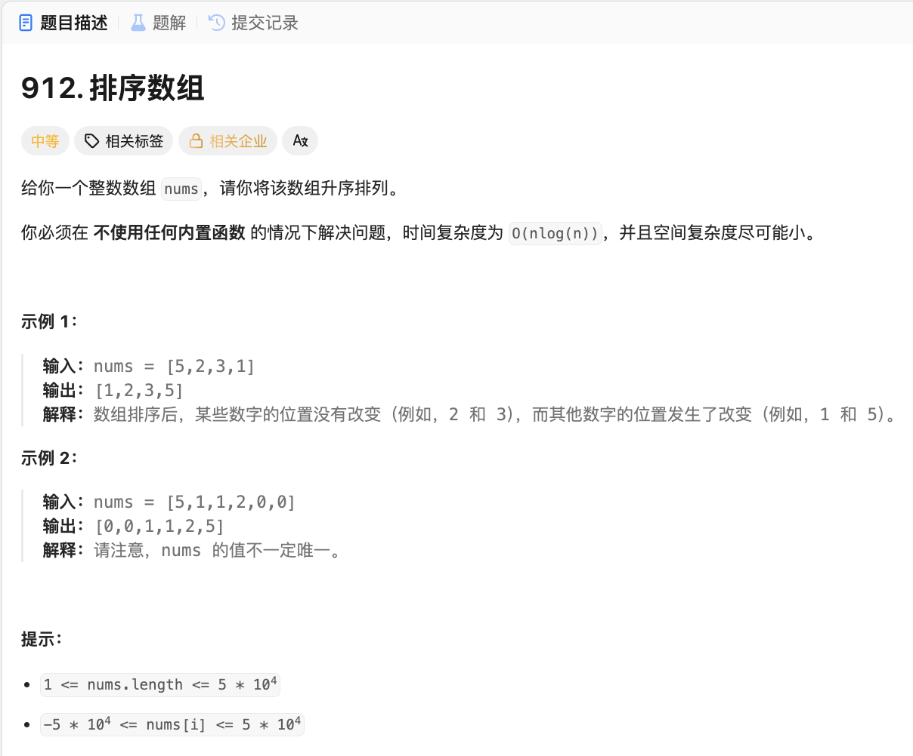
题解
快速排序
xxxxxxxxxxpublic void qiuck_sort(int[] nums, int left, int right){ if(left>right){ return; } int standard = nums[left]; int pLeft = left; int pRight = right; while(pLeft!=pRight){ //一定要先找pRight, 因为哨兵在左边。 while(pLeft<pRight && nums[pRight]>=standard){ pRight-=1; } while(pLeft<pRight && nums[pLeft]<=standard){ pLeft+=1; } swap(nums, pLeft,pRight); }
swap(nums, left, pLeft);
qiuck_sort(nums, left, pLeft-1); qiuck_sort(nums, pLeft+1, right);}
5.最长回文子串
题目
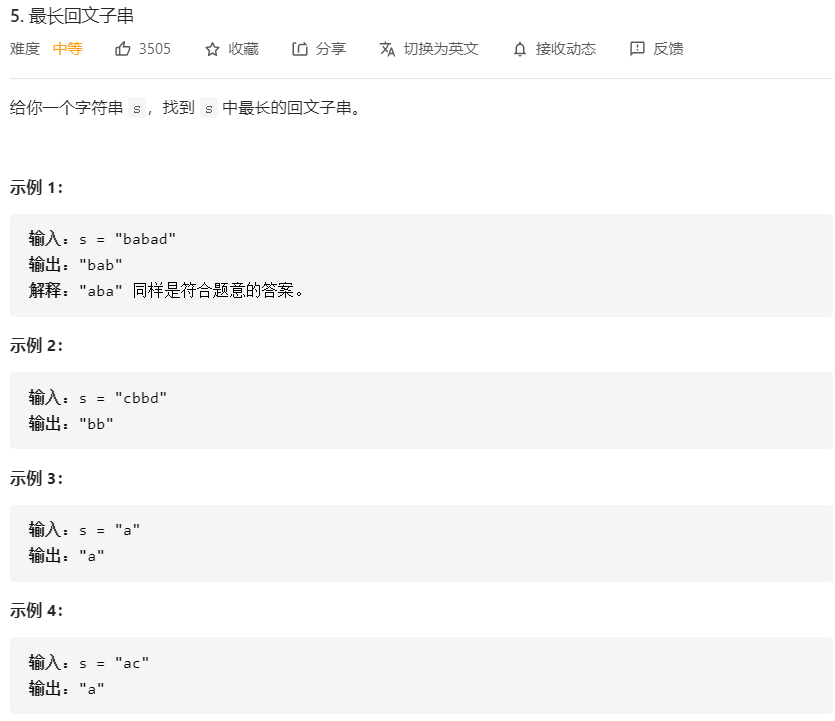

解题思路：
阶段与状态：
用一个二维数组 dp [ ] [ ] 记录每个子串是否为回文子串。如果是s[a:b]是回文串，那么dp[a] [b]=true，否则dp[a] [b] = false。
状态转移方程：
核心思想：一个字符串s，如果由字符串s的 第i个字符 到 第j个字符所构成的子串 s[i:j]是回文串，且s[i-1]==s[j+1]，那么s[i-1:j+1] 也是子串。
初始化与dp填充顺序：
初始化：长度为1的子串全是回文串，因此将dp对角线的位置全部设为true；再判断长度为2的子串是否为回文，并填充主对角线上面的对角线，如下图中篮圈的位置。
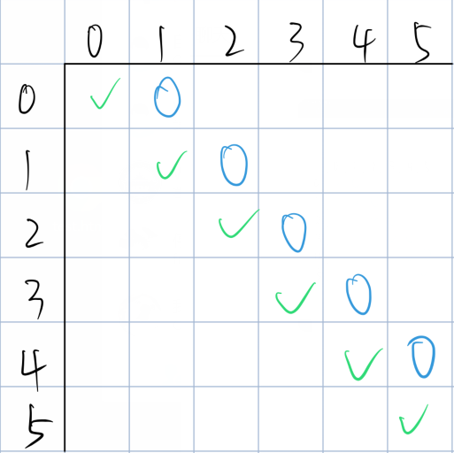
填充dp数组其它位置：填充的时候还是按照对角线的顺序，填充顺序如下图蓝色实心圆的顺序。
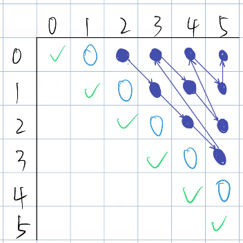
21. 合并两个有序链表
题目
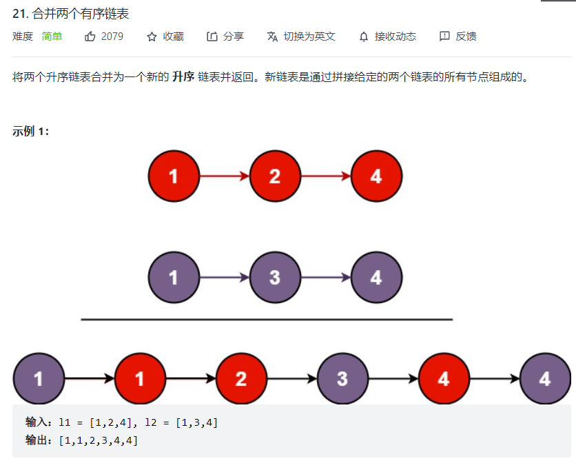
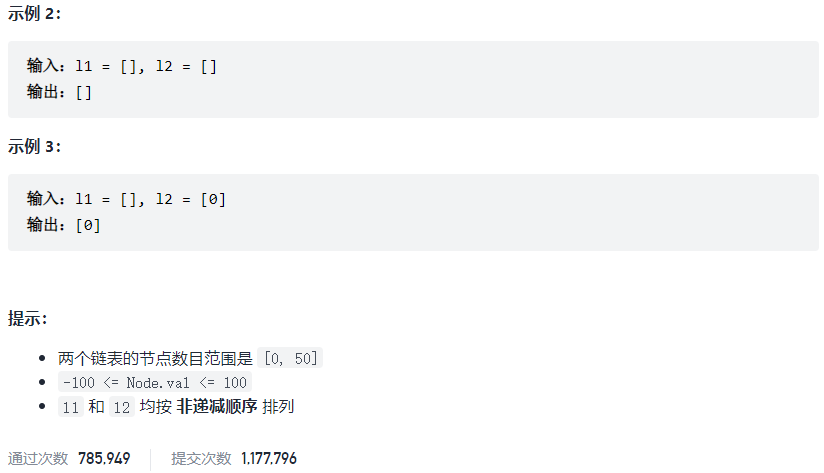
题解
这题的基本思路就是不断从 两个链表中取出 结点，只不过取的时候要 保证每次都取到>=的结点。具体：从a链表取一个结点后，下次就从a链表的剩余结点与另一个链表中取了。不断这样，直到取完所有元素。
具体实现的话，因为这个过程是重复的，可以用递归或迭代。
方法一：递归
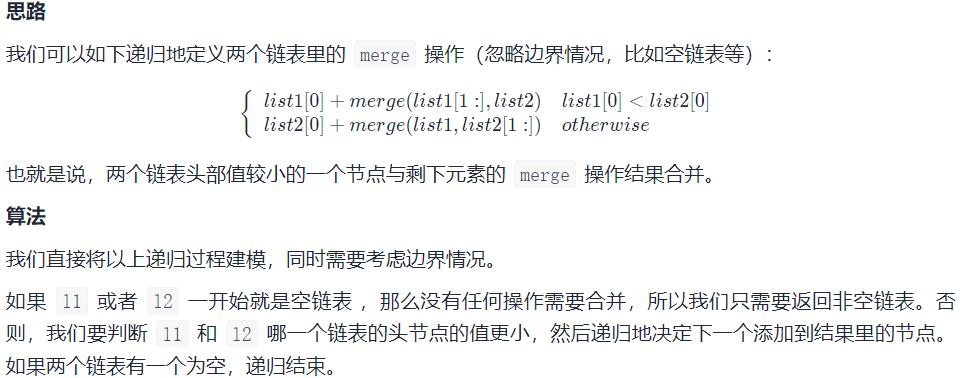
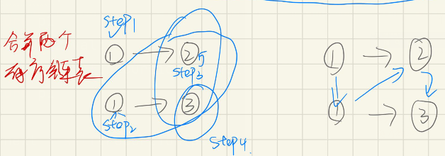
xxxxxxxxxxclass Solution:def mergeTwoLists(self, l1: ListNode, l2: ListNode) -> ListNode:if l1 is None: # 如果list1没有元素了，那么后面肯定全部都是从list2中拿元素return l2elif l2 is None:return l1elif l1.val < l2.val:l1.next = self.mergeTwoLists(l1.next, l2) # 哪个节点被选中，直接改变那个节点的next指针。这样整个下来，就串起来了。十分巧妙啊。return l1else:l2.next = self.mergeTwoLists(l1, l2.next)return l2

方法二：迭代
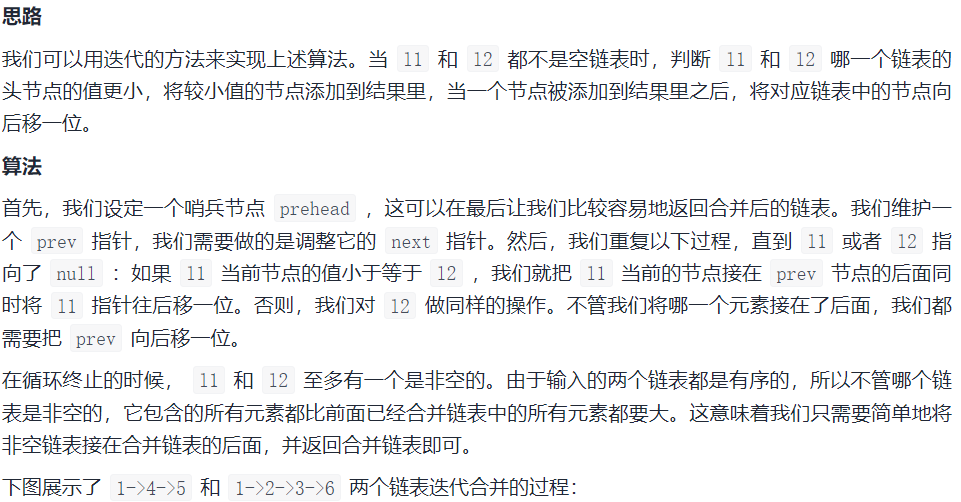
代码如下，可以看到就是模拟了递归：
xxxxxxxxxxpublic ListNode mergeTwoList(ListNode root1, ListNode root2){ListNode dummy = new ListNode(0);ListNode tail = dummy;ListNode p1 = root1;ListNode p2 = root2;while (true){if (p1==null){tail.next = p2;break;}else if (p2==null){tail.next = p1;break;}if (p1.val<= p2.val){tail.next = p1;tail = tail.next;p1 = p1.next;}else {tail.next = p2;tail = tail.next;p2 = p2.next;}}return dummy.next;}
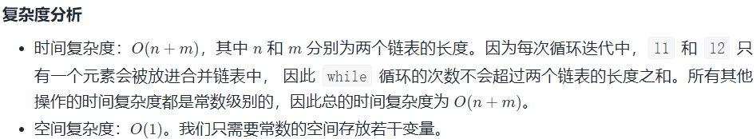
一些感受
每一步都一样的话，可以用递归，也可用迭代。
这道题是 线性表结构，每个状态向下只有一个状态，因此用迭代的话，不用需要用栈保存中间状态，所以迭代方法的空间复杂度才O(1)；
这道题采用递归的方式时，是从后往前连的，即先连接最后的结点，然后依次向前。这样的话就需要栈来保存前面的结果。因此用迭代的话：
- 缺点：空间复杂度大
- 优点：写代码比较简单。（实际写代码确实能感受到这点，写成迭代要注意很多很多细节。)
其它必背
- 堆排序
####